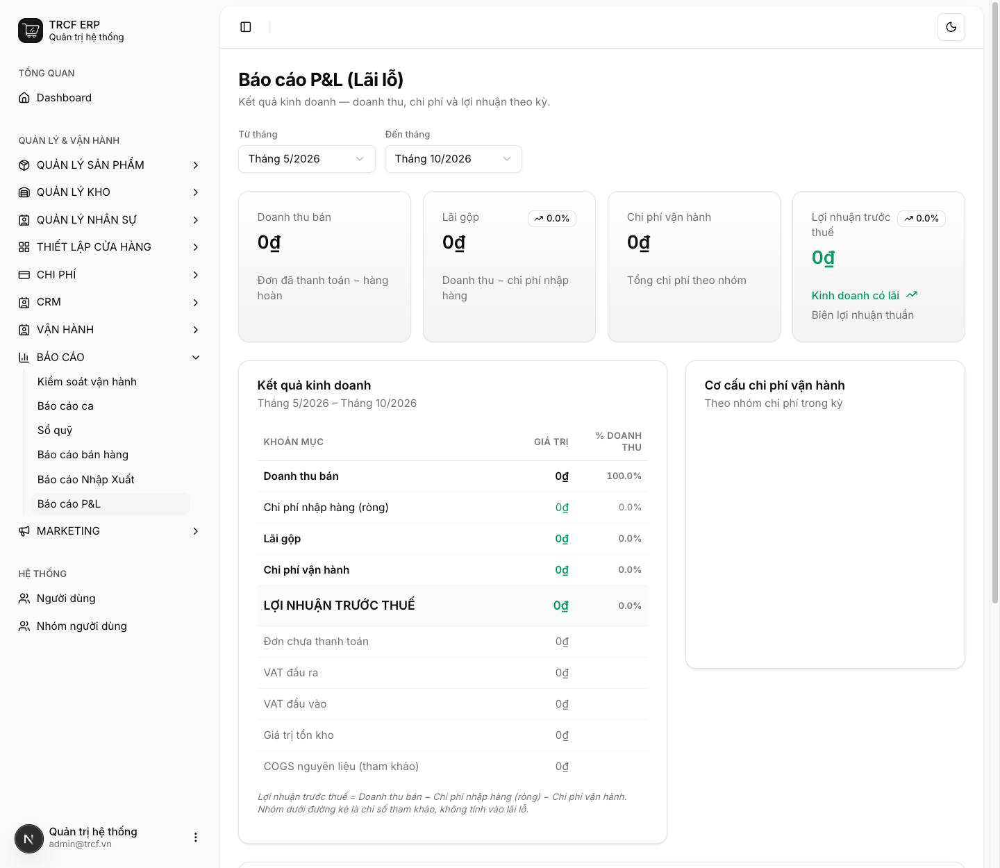
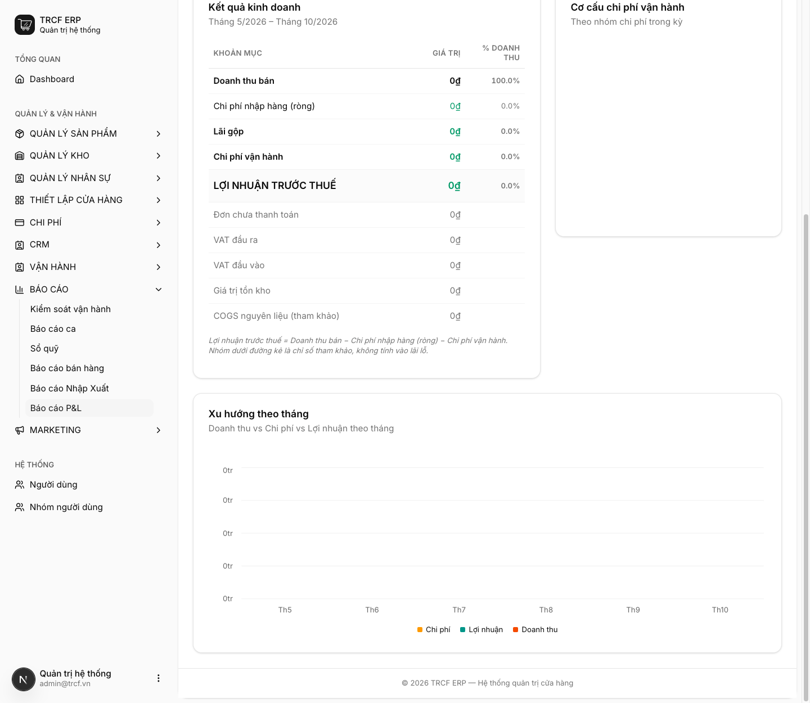

Chương 8 · Báo cáo kinh doanh
8.2 Đọc hiểu báo cáo lãi lỗ (P&L)
1. Đường dẫn vào chức năng
Menu trái: Báo cáo → Báo cáo P&L (địa chỉ /pnl-report).
- Chọn kỳ: Từ tháng – Đến tháng ở đầu trang.
- Dành cho: quản lý và chủ quán.
2. Ví dụ nền và các bước thực hiện
Ví dụ: chủ quán xem kết quả kinh doanh từ tháng 5/2026 đến tháng 10/2026.
- Đọc 4 ô tổng ở đầu trang.
- Đọc bảng Kết quả kinh doanh và biểu đồ bên dưới.
Bước 1Chọn kỳ và đọc 4 ô tổng
- Vào Báo cáo → Báo cáo P&L.
- Chọn Từ tháng, Đến tháng.
- Đọc 4 ô: Doanh thu bán, Lãi gộp, Chi phí vận hành, Lợi nhuận trước thuế.
- Đọc bảng Kết quả kinh doanh: giá trị và % doanh thu từng khoản mục.
- Nhóm dưới đường kẻ (Đơn chưa thanh toán, VAT, Giá trị tồn kho, COGS) là chỉ số tham khảo, không tính vào lãi lỗ.

Bước 2Đọc biểu đồ
- Cuộn xuống: Cơ cấu chi phí vận hành theo nhóm, xem khoản nào ăn nhiều nhất.
- Xu hướng theo tháng: doanh thu, chi phí, lợi nhuận từng tháng.

3. Giải thích các trường
Bốn ô tổng nối với nhau
Doanh thu bán (đơn đã thanh toán − hàng hoàn)
− Chi phí nhập hàng (ròng) (tiền mua hàng − tiền trả lại NCC)
= Lãi gộp
− Chi phí vận hành (tổng phiếu chi theo nhóm)
= Lợi nhuận trước thuế
Từng ô lấy số từ đâu
| Ô | Nguồn |
|---|---|
| Doanh thu bán | Đơn bán đã thanh toán, trừ hàng hoàn |
| Chi phí nhập hàng (ròng) | Đơn mua đã thanh toán, trừ tiền trả lại nhà cung cấp |
| Lãi gộp | Doanh thu − chi phí nhập hàng |
| Chi phí vận hành | Phiếu chi đã hoàn tất và đã thanh toán, gom theo danh mục (mục 6.1) |
| Lợi nhuận trước thuế | Lãi gộp − chi phí vận hành |
4. Lưu ý quan trọng
⚠️
"Chi phí nhập hàng" là tiền đã chi mua hàng trong kỳ, không phải giá vốn của hàng đã bán.
- Tháng nhập nhiều để trữ: lãi gộp thấp giả tạo.
- Tháng sau bán hàng tồn đó: lãi gộp cao giả tạo.
- Muốn đánh giá đúng: xem theo quý hoặc đối chiếu thêm với giá trị tồn kho.
⚠️
Chỉ khoản chi có phiếu mới vào báo cáo.
- Trả tiền điện bằng tiền túi mà không lập phiếu chi: lợi nhuận trên báo cáo cao hơn thực tế.
⚠️
Chưa trừ lương nhân viên nếu quán không lập phiếu chi cho lương.
- Muốn P&L đủ: tạo danh mục chi phí "Lương".
- Lập phiếu chi hằng tháng.
💡
Nhìn % doanh thu ở cột bên phải bảng thay vì con số tuyệt đối.
- Tỷ lệ chi phí nhập hàng trên doanh thu là chỉ số ổn định để so giữa các tháng.
- Kể cả khi quy mô thay đổi.